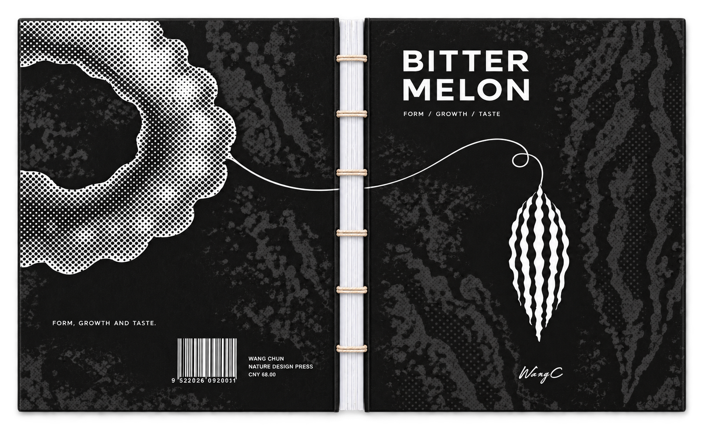
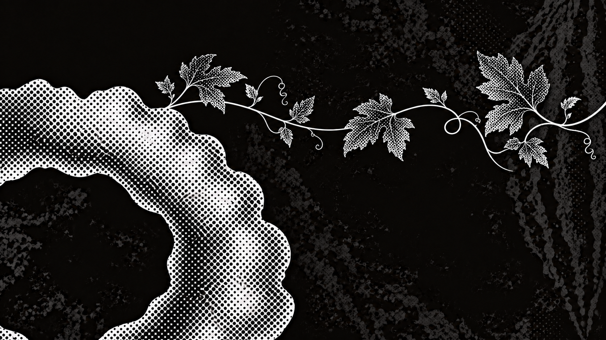
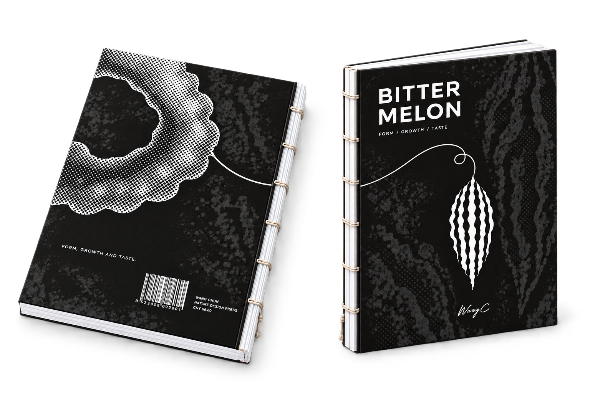
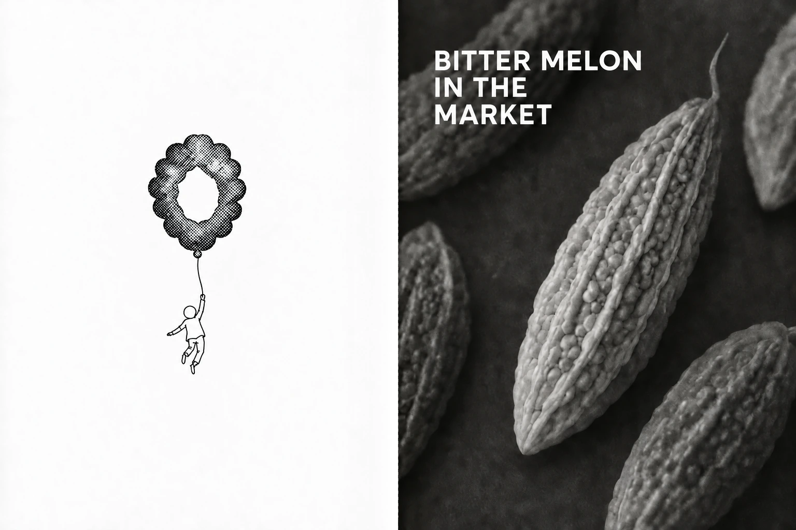
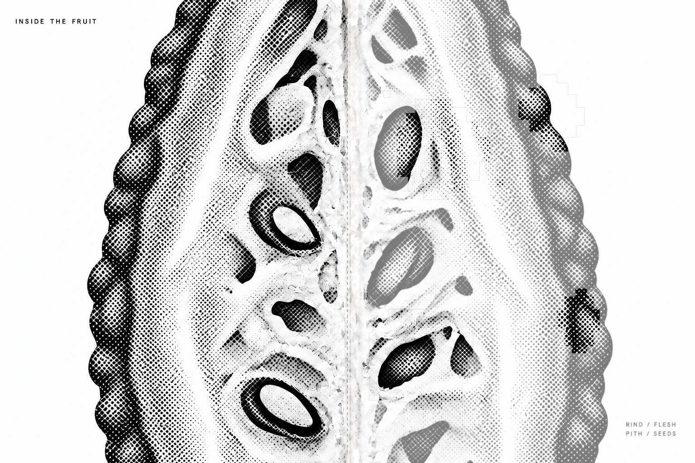
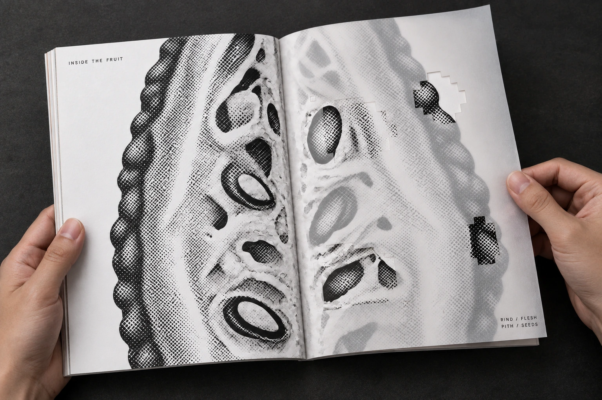
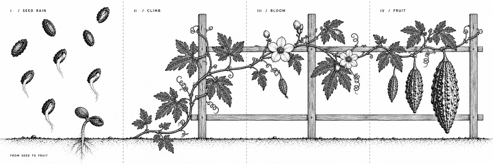
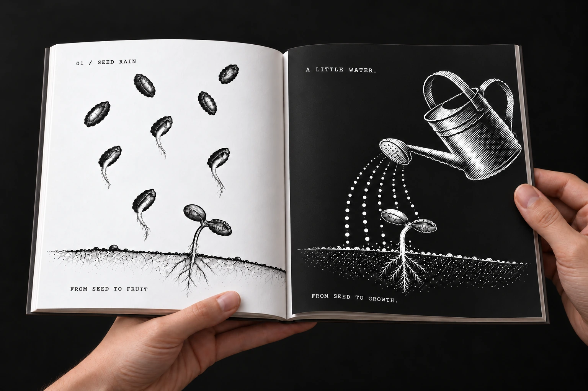
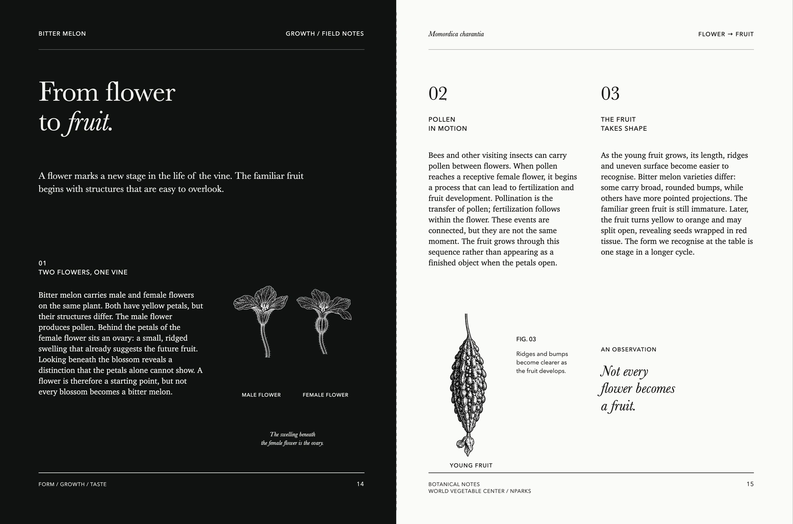
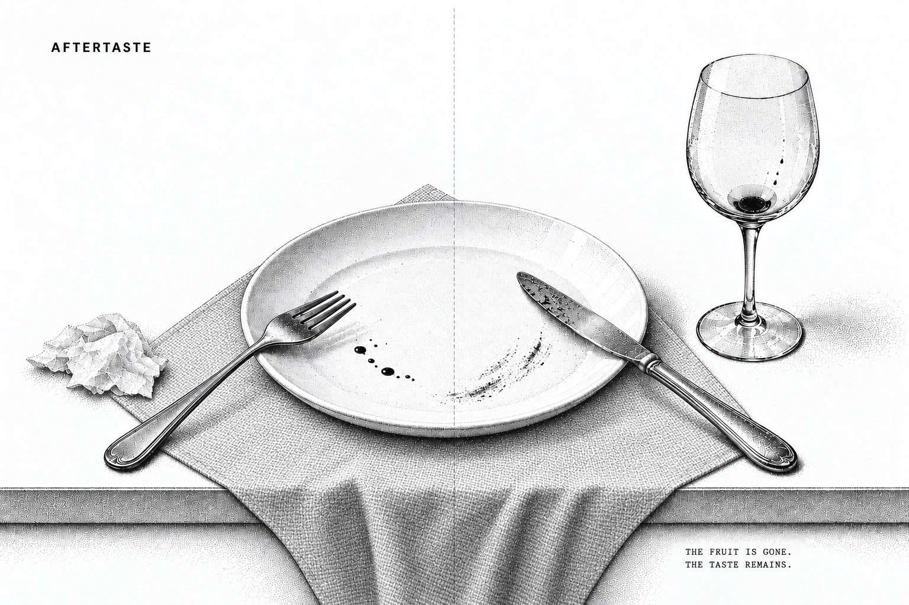

A BOTANICAL BOOK
BITTERMELON
From seed to taste.
EXPLORE THE BOOK

A BOTANICAL BOOK
From seed to taste.
EXPLORE THE BOOK

WANG CHUN / EXPERIMENTAL BOOK
A familiar fruit becomes a sequence of images, textures and gestures. From the first bite to the last trace, this book gives a fleeting sensation a form you can hold.
Design decisions. A black-and-white palette makes changes in scale and grain carry the taste. Translucent pages layer the fruit's inside and outside; the foldout lets a vine continue beyond a single spread.
THE BOOK AS AN OBJECT
A dark, textured cover holds the image together. White signatures and visible thread reveal how the book is made.

The front and back cover share one botanical language: a cut section, a winding tendril and the long rhythm of the fruit. The exposed spine leaves the paper and stitching visible.
FROM THE MARKET TO THE FIRST BITE
A familiar object, a moment of hesitation, a first bite. Each spread changes the pace through scale, contrast and empty space.

A PAGE BETWEEN SEEING AND TOUCH
The inside of the fruit becomes a layered reading surface. Translucent paper veils the image; pixel-shaped openings let parts of it come through.


ONE VINE / FOUR CONNECTED PANELS
Seed, rain, climb and fruit. The vine keeps going beyond a single spread, turning the reading sequence into a continuous line.

The first fold reveals a new face. The second reveals the full sequence. Three existing mockups show the same object at different moments.

A CHANGE OF STATE
Botanical observations sit beside abstract shifts of grain and density. The fruit is read from its surface to its interior.

THE LAST SPREAD
The meal has ended. A glass, a plate and a crumpled napkin hold the final pause. The book closes with an aftertaste.

THE FULL READING SEQUENCE
Continue through all seventeen views.
THE OBJECT / THE READING / THE MATERIAL
Black ink, translucent paper and an unfolding vine turn taste, touch and growth into a reading sequence. From the first bite to the final table, bitterness leaves its trace.
BITTER MELON / A BOOK BY WANG CHUN